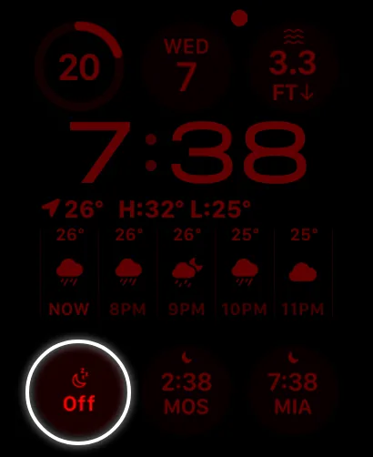

WhatchAlarm · Инструкция
Настройка и инструкция
WhatchAlarm — умный будильник, который работает на Apple Watch. Вы задаёте крайнее время, когда нужно встать, и окно перед ним. В пределах окна часы ищут момент более лёгкого сна — когда вы уже ворочаетесь — и будят в него. Если такого момента нет, будильник прозвонит ровно в заданное время.
Приложение на iPhone — это инструкция и покупка. Сам будильник целиком работает на часах: iPhone может лежать в другой комнате или быть выключенным.
Снимки экрана — из английской версии приложения; названия кнопок в тексте даны так, как они выглядят на русском.
Что нужно
- Apple Watch с watchOS 10 или новее
- iPhone с iOS 17 или новее, связанный с часами
- Около пяти минут на настройку ниже
Настройте один раз — вечером перед первой ночью.
Настройка за пять шагов
Шаги 1, 3 и 4 — на iPhone, шаг 2 — на часах. Каждый делается один раз.
Установите приложение на часы
iOS не всегда сама ставит приложения на часы. На iPhone:
- Приложение Watch
- Мои часы
- Основные
- прокрутите вниз
- Доступные приложения
- WhatchAlarm
- Установить
Совет: если на том же экране «Основные» включить «Автоустановку приложений», новые приложения для часов будут ставиться сами.

Разрешите доступ на часах
Откройте WhatchAlarm на Apple Watch. В первый раз приложение попросит три разрешения — разрешите все три:
Эти запросы появляются на часах, а не на iPhone, потому что будильник работает на часах. Без них он всё равно разбудит в заданное время, но лёгкий момент искать не сможет.
Разрешите WhatchAlarm в режиме «Сон»
Это важный шаг: без него режим фокусирования «Сон» может задержать будильник. На iPhone:
- Настройки
- Фокусирование
- Сон
- Приложения
- в разделе «Разрешить уведомления»
- добавьте WhatchAlarm


Включите отслеживание сна
Тогда часы ночью чаще измеряют пульс. На iPhone:
- Приложение Watch
- Мои часы
- Приложения
- Сон
- Отслеживать сон с Apple Watch
Строка «Приложения» — ближе к концу списка «Мои часы». Если вы уже видите данные о сне в приложении «Сон» на часах, значит, всё включено.

Спите в часах
Ночью часы отслеживают движение и пульс — по этим сигналам WhatchAlarm отличает лёгкий сон от глубокого. Перед сном проверьте заряд.
Как поставить будильник
На одно утро


- Откройте WhatchAlarm на часах и колёсиком Digital Crown выберите крайнее время подъёма.
- Нажмите «Окно» и выберите, насколько раньше этого времени можно будить: 10, 15, 20 или 30 минут. Для начала хорошо 20 минут.
- «Звук» — оставьте включённым, если хотите звук в конце (см. «Как будильник будит»).
- Нажмите «Старт». На экране появится «Будильник заведён», день, время и окно.
Чтобы отменить, пока он не прозвонил:
- Управление
- Выключить будильник
Каждую неделю: расписание
На часах нажмите «Расписание» внизу главного экрана. Включите нужные дни, у каждого своё время. В будний день кнопка «Применить к Пн–Пт» копирует время на все пять будних дней.
Будильник по расписанию звонит в эти дни сам. Чтобы пропустить одно утро, откройте WhatchAlarm, когда этот будильник заведён, и нажмите «Управление» → «Пропустить это утро» — расписание при этом не выключится.
Умной части нужно одно касание в день
Apple разрешает приложению на часах готовить ночную сессию, только пока оно открыто на экране, и не больше чем примерно на полтора дня вперёд. Поэтому:
- Сам будильник звонит всегда — он заведён на несколько дней вперёд.
- Умная часть (поиск лёгкого момента) включается, когда вы открываете WhatchAlarm в течение суток до будильника. Выключение утреннего будильника на часах тоже считается, так что обычно делать ничего не нужно.
- Если какой-то день выпадет, придёт вечернее напоминание — достаточно нажать на него. Выберите для него время, когда часы точно на руке, а не на зарядке:
- Настройки
- Вечернее напоминание
Как будильник будит
Мягко, когда можно, и настойчиво, когда нужно. Что именно будет, зависит от того, нашли ли часы лёгкий момент.
Нашёлся лёгкий момент
Раннее пробуждение: мягко
Вы уже почти проснулись, поэтому будильник начинает с касаний запястья, которые усиливаются в течение трёх минут. Всё ещё спите? Вибрация становится такой, как выбрано в «Настройки» → «Сила пробуждения» («Мягко», «Обычно» или «Сильно»). Звука на этом этапе нет.
Если к крайнему времени вы так и не выключили будильник, он переходит к пробуждению в полную силу.
Наступило крайнее время
Крайнее время: в полную силу
Без мягкого начала — время вышло. Самая сильная вибрация часов, без пауз, с первой же секунды. Через две минуты добавляется звук, и так до тех пор, пока вы не выключите будильник.
Когда будильник начинает сразу со звука
Вибрировать для WhatchAlarm часы могут, только пока идёт ночная сессия приложения, а Apple ограничивает её примерно 30 минутами. При окне 30 минут вся сессия уходит на поиск лёгкого сна и заканчивается ровно к крайнему времени. После этого приложение может будить только уведомлениями — поэтому звук начинается сразу. То же самое, если вы не открывали WhatchAlarm на часах за сутки до будильника: тогда ночной сессии нет совсем.
Хотите, чтобы сначала была вибрация, — ставьте окно не больше 20 минут.
Звук и бесшумный режим
Для звука нужны две вещи: включённый «Звук» в WhatchAlarm и выключенный бесшумный режим часов (колокольчик в Пункте управления часов). В бесшумном режиме Apple Watch не даёт звучать ни одному приложению, даже будильнику Apple, — тогда WhatchAlarm будит только вибрацией.
Как выключить
Нажмите «Выключить» в WhatchAlarm или нажмите на уведомление будильника.
Следующий будильник на циферблате
Добавьте расширение WhatchAlarm, чтобы видеть следующий будильник сразу на циферблате. Зажмите циферблат, затем:
- Изменить
- выберите место
- WhatchAlarm
- Следующий будильник
Оно показывает время и день следующего будильника. Если будильник не заведён — Off («Выкл.»). На больших местах для расширений видно ещё, включена ли умная часть; «Коснитесь, чтобы вкл.» значит, что пока нет — одно касание открывает WhatchAlarm и включает её.


Настройки на часах
- WhatchAlarm
- Настройки
- Формат времени
- Автоматически, 12 или 24 часа.
- Сила пробуждения
- Насколько настойчиво продолжать раннее пробуждение после первых касаний: «Мягко», «Обычно» или «Сильно». В крайнее время будильник всегда будит в полную силу.
- Вечернее напоминание
- Вкл/выкл и время.
- Диагностика
- Журнал того, что делал будильник и почему. Он остаётся на часах, пока вы сами не нажмёте «Отправить журнал»; пригодится, если пишете нам о проблеме.
«История» на главном экране — последние две недели: когда будильник разбудил и как — рано (по движению или пульсу) или в крайнее время.
Бесплатный период и покупка
WhatchAlarm бесплатен 14 дней, со всеми возможностями. Потом одна покупка открывает его навсегда — это не подписка, ничего не продлевается.
Купить можно в любой момент в приложении на iPhone:
- Инструкция и настройки
- Покупка
Уже покупали — на новом телефоне или после переустановки? Нажмите «Уже покупали? Восстановить покупку». Приложение всегда сообщит результат:
- Покупка восстановлена — приложение разблокировано.
- Покупка не найдена — у аккаунта App Store на этом iPhone нет покупки WhatchAlarm. Войдите в Apple ID, с которого покупали (Настройки → ваше имя → Контент и покупки), и попробуйте ещё раз.
- Не удалось восстановить — App Store не отвечает. Проверьте интернет и попробуйте ещё раз.

Будильник не будит?
Проверьте по порядку.
- WhatchAlarm разрешён в Настройки → Фокусирование → Сон → Приложения (шаг 3).
- Часы были на руке и заряжены.
- Будильник был поставлен («Старт») или запланирован на часах.
- Доступ разрешён на самих часах (шаг 2).
- Нет звука? Скорее всего, на часах бесшумный режим — так и должно быть, будильник будит вибрацией.
Конфиденциальность
У WhatchAlarm нет аккаунта, серверов, аналитики и рекламы. Пульс и движение считываются на часах, используются на часах и никогда их не покидают.
Полная политика: Политика конфиденциальности. Вопросы: contact@nghive.app